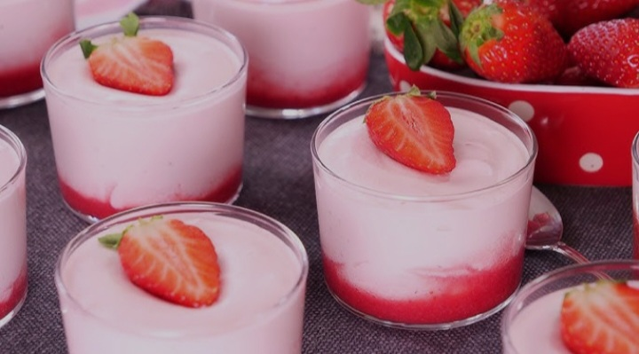
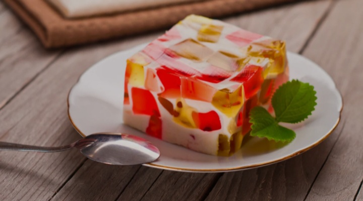

Postres Sandra - Los más deliciosos y caseros
Deliciosos postres para comer en familia, amigos y en cualquier ocasión especial
Los postres están hechos con cariño, dedicación, los mejores ingredientes y también son muy deliciosos, siempre cuidando cada detalle para que al probarlos sientas todo el sabor y la calidad que nos caracteriza.
.jpeg)
📋 ¿De qué trata este proyecto?
Este proyecto web llamado Postres Sandra es un sistema completo para administrar todo lo relacionado con el negocio de repostería: registro de clientes, control de pedidos, gestión de productos, datos de la empresa y relación con proveedores. Todo está conectado a una base de datos para mantener la información segura, organizada y siempre actualizada.
📌 Principales funciones
- Gestión de Clientes
- Agregar nuevos registros
- Modificar datos existentes
- Eliminar clientes antiguos
- Catálogo de Productos
- Clasificación por categorías
- Imágenes y descripciones
- Precios actualizados
- Procesamiento de Pedidos
- Crear pedidos nuevos
- Ver historial de compras
✅ Ventajas del sistema
- Rápido y fácil de usar
- Diseño limpio y agradable
- Información siempre disponible
- Acceso desde cualquier lugar
- Colores que facilitan la lectura
📘 Conceptos clave
- Cliente
- Persona que elige y compra nuestros postres.
- Producto
- Cada delicia elaborada artesanalmente con amor.
- Pedido
- Solicitud formal de productos para entregar.
🎯 Valores que nos distinguen
- Calidad superior garantizada
- Frescura en cada preparación
- Atención cálida y amable
- Higiene y limpieza total
Nuestra Historia y Tradición
Todo comenzó hace ya varios años, como un pequeño pasatiempo y una gran pasión por la repostería. Lo que empezó preparando cosas ricas solo para la familia y vecinos, poco a poco fue creciendo gracias a que todo lo que hacíamos gustaba muchísimo, por su sabor auténtico, por ser tan casero y por la forma tan cuidadosa en la que se preparaba cada cosa.
Con el paso del tiempo, fuimos aprendiendo, mejorando recetas, creando nuestras propias combinaciones y logrando sabores únicos que hoy nos distinguen. Así nació oficialmente Postres Sandra, con el sueño y objetivo de poder llevar alegría, dulzura y momentos muy felices a la mesa de todas las personas que nos prefieren y confían en nosotros. Nuestra mayor satisfacción es ver la cara de gusto de cada cliente cuando prueba nuestros productos, saber que quedan contentos y que siempre vuelven, incluso que nos recomiendan con más gente. Esa es nuestra mejor recompensa.
Actualmente nos hemos convertido en uno de los negocios más queridos y reconocidos de la zona, sin dejar nunca de ser lo que somos: un lugar donde todo se hace como en casa, con mucho esmero, higiene total y sobre todo muchísimo cariño, porque creemos firmemente que ese es el ingrediente principal que hace que todo sepa increíblemente bien.
¿Qué nos hace ser diferentes y especiales?
En Postres Sandra tenemos siempre muy claras nuestras reglas y valores, cosas que jamás cambiamos y que son lo más importante para nosotros:
- Ingredientes de primera calidad: Nunca utilizamos cosas de baja calidad, buscamos siempre lo mejor, lo más fresco y lo más natural posible, porque sabemos que eso se nota totalmente en el sabor, en la textura y también en la calidad nutricional de lo que comemos. Trabajamos con proveedores de mucha confianza, con quienes llevamos años trabajando, para asegurarnos que todo lo que entra a nuestra cocina sea excelente.
- Recetas tradicionales y propias: Tenemos todas esas recetas clásicas que nunca fallan y que a todos les encantan, esas que se han usado por generaciones y que son parte de la repostería clásica, pero también creamos nuestras propias versiones, mezclamos sabores, probamos nuevas combinaciones y creamos cosas totalmente nuevas y únicas que solo podrás encontrar aquí con nosotros.
- Preparación totalmente artesanal: Aunque ya somos más grandes, seguimos preparando todo a mano, paso a paso, tal como se hacía antes. No usamos masas prefabricadas ni mezclas industriales, todo se hace desde cero, empezando por hacer las masas, los rellenos, las cremas, las coberturas, absolutamente todo, lo cual da ese sabor auténtico que nos caracteriza y que es imposible de imitar.
- Variedad para todos los gustos: Sabemos perfectamente que cada persona tiene gustos distintos, por eso tenemos una carta enorme de opciones: cosas con fruta fresca, con chocolate de todos los tipos, cremosos, esponjosos, secos, ligeros o más sustanciosos, hay para quienes les gusta lo muy dulce, para quienes prefieren algo más suave, incluso opciones con menos azúcar o adaptadas para necesidades especiales. No importa qué te guste, aquí seguro encuentras algo que te va a encantar.
- Frescura garantizada: Cada día horneamos y preparamos justo lo necesario, nada se hace con demasiada anticipación, todo lo que vendemos fue hecho máximo ese mismo día o el día anterior, para asegurar que cuando llegue a tus manos esté fresco, suave, rico y en su mejor punto de consumo, como si lo acabaras de sacar del horno tú mismo.
Lista completa de nuestros productos más pedidos
Tenemos muchísimas opciones, pero estos son los que más nos piden y los famosos de la casa, los que ya son clásicos y obligados cuando nos visitan:
🔹 Pasteles y Tortas
Tenemos de todos los tamaños: desde pequeñitos para comer solo o compartir entre dos personas, medianos ideales para reuniones chicas o familia pequeña, hasta grandes y gigantes, perfectos para fiestas, cumpleaños, celebraciones grandes o eventos donde van muchas personas. Los hacemos de cualquier sabor y combinación: vainilla, chocolate, nuez, coco, fresa, piña, lechosa, con rellenos de crema, fruta, dulce de leche, mermeladas caseras, lo que tú quieras. También los decoramos totalmente a tu gusto, con escritos, figuras, colores, temas, lo que imagines lo podemos hacer realidad.
.jpeg)
🔹 Postres individuales y porciones
Perfectos para darse un gustito, para el postre de la comida o cena, para llevar al trabajo o escuela, o simplemente cuando tienes antojo de algo rico pero no quieres comprar algo muy grande. Tenemos: flanes de varios sabores, arroz con leche, natillas, gelatina con trocitos de fruta, chajá, mousses, cremas volteadas, bizcochuelos rellenos, tartaletas, empanaditas dulces y muchísimas cosas más, siempre muy bien servidos, con mucha generosidad y buen sabor.

Galletas, panes dulces y bocaditos
Ideales para acompañar un café, un té, un chocolate caliente o para comer en cualquier momento del día. Hechas con harinas seleccionadas, mantequilla real, huevos frescos y todo natural. Tenemos galletas suaves, crujientes, con trocitos de chocolate, con frutos secos, de coco, de almendra, de avena, también panes dulces de muchas formas y tamaños, rellenos o simples, todos muy ricos y esponjosos.

Pedidos especiales y personalizados
¿Tienes algo en mente que no ves aquí? No hay problema, ¡lo hacemos! Aceptamos pedidos totalmente hechos a medida. Si necesitas algo para una fiesta temática, para un evento corporativo, para regalar, para una fecha importante, o si simplemente quieres que preparemos una receta especial o antigua que te gusta mucho, solo tienes que decírnoslo, comentarnos todos los detalles y nosotros nos encargamos de hacerlo realidad, con toda la calidad y dedicación de siempre. Trabajamos así hace mucho tiempo y nos encanta porque es una forma de crear cosas únicas y especiales para cada persona.

¿Dónde estamos y cómo puedes comprar?
Nuestro local principal está ubicado en una zona muy accesible y conocida, con instalaciones muy cómodas, limpias, bonitas y agradables para que puedas pasar, ver todo lo que tenemos, elegir con calma y llevarte lo que más te guste. Contamos con mostrador amplio donde siempre tenemos gran variedad ya listo para llevar, así que casi siempre puedes llevarte tu compra en ese mismo momento sin esperas.
También contamos con servicio de pedidos por encargo, por si necesitas algo muy grande, mucha cantidad, algo especial o que hagamos algo que no tenemos a la vista, basta con avisarnos con al menos uno o dos días de anticipación, dependiendo de lo que sea, y te lo tenemos listo justo cuando lo necesites, listo para pasar a recogerlo.
Hacemos entregas a domicilio dentro de cierta zona de la ciudad, así que si no puedes venir personalmente, te llevamos tu pedido hasta la puerta de tu casa u oficina, con toda seguridad y cuidado para que llegue intacto y en perfecto estado. Pregunta por el costo y alcance de este servicio, nos adaptamos siempre para darte las mayores facilidades posibles.
Comprar aquí es súper fácil, cómodo y seguro. Tenemos precios muy justos, accesibles para todos, pensados para que calidad y buen precio vayan siempre juntos, no es necesario gastar demasiado para comer cosas realmente ricas y de calidad excelente, esa ha sido siempre nuestra filosofía y forma de trabajar. Aceptamos varias formas de pago para que te sea más sencillo aún hacer tus compras.
Compromiso y agradecimiento
Para nosotros cada cliente es mucho más que una venta, son personas que nos dan su confianza, su preferencia y su apoyo, cosas que valoramos inmensamente y que nos hacen seguir esforzándonos cada día para ser mejores, para dar más calidad, mejor servicio y más cosas ricas. Sabemos que sin ustedes nada de esto sería posible, por eso damos gracias de corazón a todos los que han estado con nosotros desde el principio, a quienes se van sumando ahora y a todos los que nos recomiendan y nos ayudan a crecer.
Nos comprometemos formalmente a mantener siempre nuestros estándares altos, a cuidar cada detalle, a innovar, a conservar nuestra esencia y a dar siempre lo mejor de nosotros mismos en todo lo que hagamos. Queremos estar aquí por muchísimos años más, siendo parte de sus vidas, de sus celebraciones y de sus momentos dulces y felices.
¡Gracias por visitarnos y esperamos verte muy pronto!